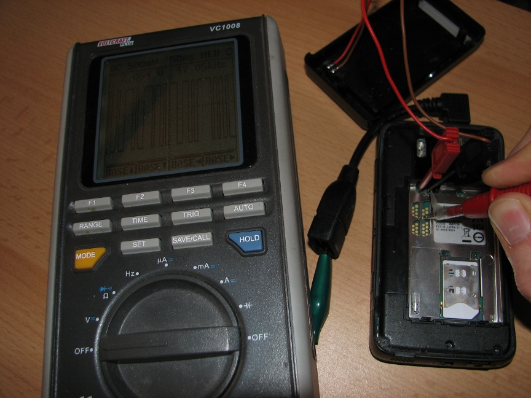

N900 Hardware Hacking
This page outlines what is known about the hardware of the N900, and possible modifications or additions to it.
Much of the information on this page may be incorrect, and may cause damage to your N900 if you attempt any of it.
Contents |
[edit] Hacks
- Case
- Camera
- Wifi
- Bluetooth
- Battery
- Audio
- Video
[edit] Additional Hardware
[edit] Compass
The HMC5843 compass from honeywell seems as if it would be a simple addition, if it could be wired onto a I2C bus.
There is also miniSD AMI603SD 6 degree sensor available, if it is possible to wire that to microSD slot. The same manufacturer is also providing small magnetic sensors AMI304 to i2c bus with DIP8 so it would be easier to solder with capacitors but there is not much room inside N900.
I2C bus can have chained up to 112 slave devices. Only problem is to get those pins available maybe de-soldering some component first... also one free GPIO/interrupt line would be good thing to have. There seems to be some pads available for I2C when looking from N900_Hardware_Schematic, J6183 and J6184 in H7 Top layout near FM transmitter. Most probably too small to solder by hand. There seems to be also one interrupt line used by transmitter in J6181.
If not needing the FM TX it could be possible remove whole component and replace it with compass.
[edit] Gyroscope
The forthcoming invensense itg3200 is a gyroscope chip that could similarly be connected to a I2C bus.
[edit] UART to I2C bridge
There is also available some bridge chips UARTtoI2C that can be used over UART. Most likely UART pins can be found in debug ports.
[edit] MMC card
The MMC controller pins are convertable to GPIO pins. See page 3 top-left of N900 Hardware Schematic, and page 691 of spruf98.pdf. This means that there are 6 available easily contactable GPIO pins, static protected. (see same page of schematic) along with a 3.3V possibly variable power supply.
[edit] Debug ports
Under the battery are several groups of test pad connectors. With the camera on the left, and the battery removed, these are numbered left-to-right then top-down for the purposes of this page, with pad 1 of a connector at its top left.
Probable connections are anything that will enable full tests and bootstrap of of the phone without a case.
Obvious candidates are JTAG for flashing any bootloader, and USB for flashing the device. Serial ports, I2C, SPI are also possible.
The third serial port / UART is reportedly connected to these ports, so it is accessible.
There are 4 groups:
- Group1 - 2 pad connector to the middle left above the battery connector (J5300/1).
- This is labeled J5300 and J5301 on the schematic. J5300 is USB D+, J5301 is USB D-.
- Group2 14 pad connector in two parts (J2000 (J2060+J2061)).
- (a) - 6 pad connector.
- (b) - 8 pad connector
- Group3 - 7 pads (J5602).
- Group4 - 7 pads.
Here are the pad names from the schematic linked in the resources section, using same logic for "+" vs "o"
+ J5301
+ J5300
J2000 J2060
J2062 + o o o o o o
o o o o o o + J2061
J5602 J3109 J3111 J3113 J3115
o o o o + + + +
o o o + + +
J3110 J3112 J3114
The plus-sign (supposedly) signifies invidual pad and group of lowercase "o" pads is a port (or similar).
According to my measurements with DMM (Digital Multimeter) the following pads are ground (counting from top-left and always going left-to-right in case of group of pads): first of J2000, last of J2060, first of J5602 and J3115.
Schematic did not reveal where these pads might actually be connected to.
According to jacekowskis measurements J2000 is serial console,
{kind=link}
| The serial port is NO RS232, it's a low-voltage direct UART IO from OMAP SoC. It's specified for 2.8V and even 3.3V seem to destroy it. |
{kind=link}
J2000
pin 1 :: GND
pin 2 :: RX, according to r00t
pin 3 :: USB VBUS 5V
pin 4 :: <unknown>
pin 5 :: TX (confirmed by jacekowski (115200 8-N-1 ~2.6 V, connected to 1st UART in omap - /dev/ttyS0 in Linux), and r00t (see below))
+ J5301
+ J5300
J2000 J2060
J2062 + GND RX 1 o o 4
5V o TX 5 o 7 + J2061
J5602 J3109 J3111 J3113 J3115
1 o o 4 + + + +
5 o 7 + + +
J3110 J3112 J3114
(confirmed by >><r00t|home> anyway... here's the actual TxD now: http://www.constancy.org/~r00t/IMG_9246.JPG << 
{kind=link}
{kind=link}
>><r00t|home> <r00t|home> this is serial loopback: http://www.constancy.org/~r00t/IMG_9251.JPG<<)
{kind=link}
According to CPKB J2060 is F/MBus port.
[edit] Modifications
[edit] USB
Further details can be found in the USB on the N900 page.
[edit] External antennas
On the N900 there are three Hirose U.FL connectors. These Hirose U.FL connectors were noted as test connectors however with the right equipment attached these can be used to increase the range of the said chips that has such connectors attached, if not to increase range it can be used possibly in other ways.
The three chips that has Hirose U.FL connectors attached are: GSM, GPS and Bluetooth/Wireless LAN. Note that the Bluetooth/Wireless LAN share the same Hirose U.FL connector.
However there are some restrictions imposed on accessing these test connectors. The first restriction is that it seems GSM's Hirose U.FL connector is the most easily accessible as it is on the underside of the N900's PCB (where one can see those solder pads when the battery is taken out of N900). Access to Bluetooth and Wireless LAN's as well as GPS receiver's Hirose U.FL are on the obverse side of that N900 PCB.
The next set of limitation is to find appropriate adapters/converters and possibly attached with a cable as allows the converted adapter's head to be placed in a location where one prefers to have the head placed. Hirose U.FL is noted best to not be used in a manner that one connects and disconnects the cable constantly (~50-200 cycles) so that would leave the most appropriate solution is to get an adapter/converter.
Most common adapter/converter would be a Hirose U.FL connector -> RP-SMA as these can be commonly found in various setup, furthermore SMA connector itself would have a longer wear than Hirose U.FL itself along with the fact that there are many antennas available in the form of RP-SMA connector form. With the cable attached and if one prefers the connector to be attached to the back of the device, this highlights the issue noted beforehand with the connectors on the obverse side of the device.
Also it is worthy to note that the size (in diameter or thickness), grade and length of the cable would also impede on the quality of communication. Too thin of a cable would make the transmitted/received signal be more susceptible to other interference, the same goes with too long for a cable would also make it more susceptible. Too thick of a cable especially if used on the obverse side of the device makes the cable unable to be able to loop around to the other side of the PCB should the owner want the actual head of the connector to be on the same side as the GSM connector for instance.
The last set of limitation would be finding the right antennas that would be compatible with the said radio frequency bands. Both Bluetooth and Wireless LAN on N900 operate on the unlicensed ISM 2.4GHz band and antennas for them are abundant. GPS receiver operates on 1.2GHz-1.5GHz band and antennas for them maybe more rare than antennas for Bluetooth/Wireless LAN. On similar level for availability the GSM antennas are equally less abundant than antennas for Bluetooth and Wireless LAN.
It is also noteworthy that the FM transmitter module relies on its own antenna, though it may also be possible with some soldering one maybe able to attach external antenna to the device.
For the locations of these Hirose U.FL connectors one will need the Hardware Schematics:
{kind=link}
- Bluetooth and Wireless LAN: Page 16, ID: X6301, Sector: N11
- GPS: Page 16, ID: X6200, Sector: H8
{kind=link}
- GSM: Page 17, ID: X7500, Sector: X10
- FMTX (not a Hirose U.FL connector): Page 17: ID: X6189, Sector H1 (Test pads??: J6192, J6193)
[edit] Resources
- N900 Service Manual - Level 1&2: MediaFire or Maemoworld
- N900 Service Manual - Level 3&4: Torrent, rghost or RapidShare
- N900 Hardware Schematic
- A teardown with some pics from Greece, and a video of reassembly.
- Disassembly video from tehkseven.
- N900 disassembled, super-highres scans by Joerg_rw: [1]
- Internal photos of N900 from FCC OET website (U.S. Govt. - May not be accessible for some people. Site does not allow hot linking, click on internal photos from the table)
- N900 Software Kernel Modules
[edit] Vendors
- Tessco had a variety of n900 parts. Note that they sold Tessco Nokia parts only to Authorized Service Centers. (they currently do not and have stopped listing parts for Nokia phones.)
- As always - ebay - this vendor has at the moment a stock of screens and various other original parts.
- This page was last modified 18:02, 3 May 2012.
- This page has been accessed 22,591 times.